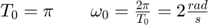
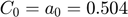
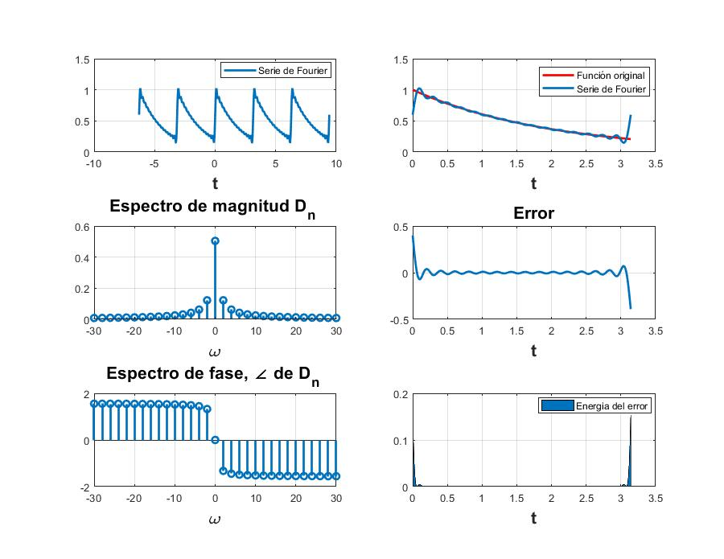
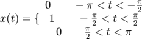
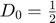
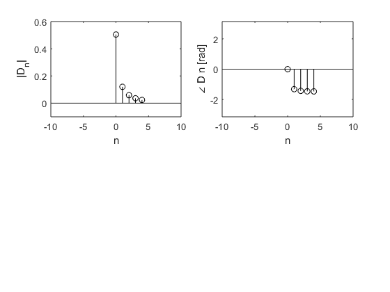
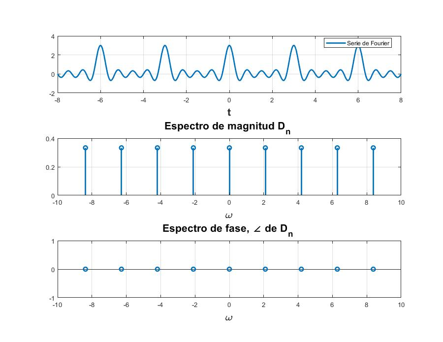
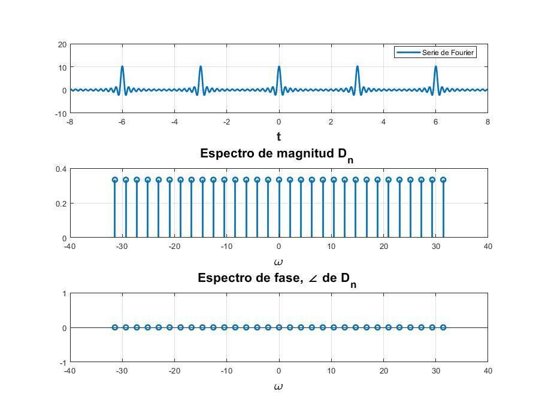

Practica 5 Series de Fourier en tiempo continuo
Materia: Señales y Sistemas
Profesor: Dr. Rafael Martínez Martínez
Grupo: 2TV1
Alumnos:
1.- Arenas Caldera Axel Jacobo
2.- Cornejo Martinez María de los Angeles
3.- Islas Martinez Porfirio Ezequiel
4.- Moreno Pilar Yael Maximiliano
Contents
Introducción
Cuando se quiere obtener la serie de Fourier de una función se necesitan ciertos coeficientes, dos en el caso de la serie de Fourier trigonométrica y uno en el caso de la serie de Fourier trigonométrica compacta y de la serie de Fourier exponencial compleja. En el caso particular de la serie de Fourier trigonométrica y la serie de Fourier exponencial compleja debemos de aplicar una integral para obtener dichos coeficientes, esta integral puede realizarse de manera analítica o numérica.
Los métodos de integración numéricos permiten obtener una aproximación al resultado real a través de calcular áreas con evaluaciones de la función y otras características que varían según el método que se utilice.
De manera que al aplicar un método de integración numérico a los cálculos de los coeficientes para las series de Fourier se obtiene una aproximación a los coeficientes reales de la serie de Fourier. Exploraremos dos casos para ello.
- Coeficientes de Fourier a través de la regla del trapecio compuesta
La regla del trapecio calcula el área de un trapecio definido por la función en un intervalo. En la regla del trapecio compuesta se extiende esta idea al subdividir el intervalo de integración en varios subintervalos y aplicar en cada uno de ellos la regla del trapecio.
De manera que la fórmula es la siguiente:
Donde :
 un periodo de la función
un periodo de la función
número de subintervalos
- Coeficientes de Fourier a través de la transformada de Fourier discreta
En este caso, se sustituye la integral por la expresión de la transformada de Fourier discreta, la cual utiliza muestras de una función en un periodo.

Donde :
un periodo de la función
 el tiempo entre cada muestra
el tiempo entre cada muestra

Reduciendo la ecuación y tomando el valor de T muy pequeño, obtenemos el siguiente resultado:
Donde:

El obtener los coeficientes de Fourier de esta manera tiene la ventaja que cada coeficientes, los coeficientes se repiten.
Por último, se sugiere que los valores de sean una potencia de 2
Ejemplo 6.1
Función:
con: 
Coeficientes:
Serie de Fourier Trigonométrica
![$x(t)=0.504[1+\sum_{n=1}^{\infty}\frac{2}{1+16n^{2}}(cos(2nt)+4nsen(2nt))]$](SySPract05AxelArenas_eq10436690197199664204.png)
Para el espectro trigonométrico necesitamos obtener los coeficientes de la serie de Fourier Trigonométrica Compacta como sigue:
Coeficientes y ángulos

Serie de Fourier Trigonométrica Compacta
Espectro trigonométrico de Fourier con 4 armónicos
Espectro trigonométrico de Fourier con 15 armónicos
Luego obtenemos y como sigue:
Con estos datos procedemos a utilizar la función del Apéndice A con 4 armónicos y el resultado es el siguiente:

y ahora con 15 armónicos:

Ejemplo 6.2
Función:
con:
Coeficientes:
Debido a la simetría de la señal los coeficientes
Luego obtenemos y como sigue:
Así la serie de Fourier exponencial compleja queda:
Con estos datos procedemos a utilizar la función del Apéndice A con 4 armónicos y el resultado es el siguiente:
y ahora con 15 armónicos:

Ejemplo 6.4
Funcion:

con:
Coeficientes exponenciales

Serie de Fourier exponencial compleja
Luego con estos datos procedemos a utilizar la función del Apéndice A con 4 armónicos y el resultado es el siguiente:

y ahora con 15 armónicos:

Ejemplo 6.5
Función:
con:
Coeficientes exponenciales
Serie de fourier exponencial compleja

Luego con estos datos procedemos a utilizar la función del Apéndice A con 4 armónicos y el resultado es el siguiente:
y ahora con 15 armónicos:
Ejemplo 6.7
T_0 = pi; N_0 = 256; T = T_0/N_0; t = (0:T:T*(N_0-1))'; M = 10; x = exp(-t/2); x(1) = (exp(-pi/2) + 1)/2; %-------- figure(1) D_n = fft (x)/N_0; n = [-N_0/2:N_0/2-1]'; for a = 1:1:5 mag_dft(a)=abs(fftshift(D_n(a))); end for a = 1:1:5 ang_dft(a)=angle(fftshift(D_n(a))); end mag_dft ang_dft clf; subplot (2, 2, 1); stem(n, abs(fftshift (D_n)),'k'); axis ([-M M -.1 .6]); xlabel('n'); ylabel('|D_n|'); subplot (2, 2, 2); stem(n, angle(fftshift(D_n)),'k'); axis([-M M -pi pi]); xlabel ('n'); ylabel('\angle D n [rad]'); %------ T_0 = pi; N_0 = 256; T = T_0/N_0; W_0=2*pi/T_0; t = (0:T:T*(N_0-1))'; M = 10; x_0 =@(t) exp(-t/2); x_1 =@(t) exp(-t/2)*exp(-1j*W_0*t); x_2 =@(t) exp(-t/2)*exp(-2j*W_0*t); x_3 =@(t) exp(-t/2)*exp(-3j*W_0*t); x_4 =@(t) exp(-t/2)*exp(-4j*W_0*t);
mag_dft =
0.5043 0.1223 0.0625 0.0419 0.0314
ang_dft =
0 -1.3258 -1.4464 -1.4876 -1.5083
Hallando los D0,...D4 (n positiva) por trapecio compuesto
figure(2) n=[0:1:4]; D_n=[trap_com(x_0,0,pi,pi/2)/T_0,trap_com(x_1,0,pi,pi/2)/T_0,trap_com(x_2,0,pi,pi/2)/T_0,trap_com(x_3,0,pi,pi/2)/T_0,trap_com(x_4,0,pi,pi/2)/T_0]; mag_trap=abs(D_n) ang_trap=angle(D_n) clf; subplot (2, 2, 1); stem(n, abs( (D_n)),'k'); axis ([-M M -.1 .6]); xlabel('n'); ylabel('|D_n|'); subplot (2, 2, 2); stem(n, angle((D_n)),'k'); axis([-M M -pi pi]); xlabel ('n'); ylabel('\angle D n [rad]'); hold on
mag_trap =
0.5047 0.1206 0.0589 0.0363 0.0238
ang_trap =
0 -1.3184 -1.4306 -1.4609 -1.4657
 De acuerdo a Lathi, en el ejemplo 6.5, que se desarrolló en el R10, la serie de Fourier exponencial compleja tiene Dn: Para llegar al resultado más preciso, no se utilizó el resultado final de Lathi que indica . Sino que desarrollando, se encontró:
for n=2:1:5 mag_ex(n)=abs((-exp(-pi/2)+1)/(pi*(0.5+2j*(n-1)))); end mag_ex(1)=abs((-exp(-pi/2)+1)/(pi*(0.5))); for n=2:1:5 ang_ex(n)=angle((-exp(-pi/2)+1)/(pi*(0.5+2j*(n-1)))); end ang_ex(1)=angle((-exp(-pi/2)+1)/(pi*(0.5))); T = table(mag_dft',ang_dft',mag_trap',ang_trap',mag_ex',ang_ex'); T(1:5,:); T.Properties.RowNames = {'D0','D1','D2','D3','D4'}; T.Properties.VariableNames{'Var1'} = 'Abs_DFT'; T.Properties.VariableNames{'Var2'} = 'Ang_DFT'; T.Properties.VariableNames{'Var3'} = 'Abs_Trap_Com'; T.Properties.VariableNames{'Var4'} = 'Ang_Trap_Com'; T.Properties.VariableNames{'Var5'} = 'Abs_Exacto'; T.Properties.VariableNames{'Var6'} = 'Ang_Exacto' % En su forma rectangular DFT=mag_dft.*exp(1j.*ang_dft); TRAP=mag_trap.*exp(1j*ang_trap); EXAC=mag_ex.*exp(1j*ang_ex); D= table(DFT',TRAP',EXAC'); D.Properties.RowNames = {'D0','D1','D2','D3','D4'}; D.Properties.VariableNames{'Var1'} = 'Dn_por_DFT'; D.Properties.VariableNames{'Var2'} = 'Dn_por_Trap_comp'; D.Properties.VariableNames{'Var3'} = 'Dn_exacto' % Comparación DFT_EXAC=abs(EXAC-DFT); TRAP_EXAC=abs(EXAC-TRAP); CMP= table(DFT_EXAC',TRAP_EXAC'); CMP.Properties.RowNames = {'D0','D1','D2','D3','D4'}; CMP.Properties.VariableNames{'Var1'} = 'ERROR_DFT'; CMP.Properties.VariableNames{'Var2'} = 'ERROR_TRAP' %Por lo tanto se puede ver que el algoritmo DFT es más preciso que el del %trapecio compuesto, puesto que hubo menor error que el valor exacto.
T =
5×6 table
Abs_DFT Ang_DFT Abs_Trap_Com Ang_Trap_Com Abs_Exacto Ang_Exacto
________ _______ ____________ ____________ __________ __________
D0 0.50428 0 0.50474 0 0.50428 0
D1 0.1223 -1.3258 0.12063 -1.3184 0.12231 -1.3258
D2 0.062536 -1.4464 0.058915 -1.4306 0.062548 -1.4464
D3 0.041859 -1.4876 0.036274 -1.4609 0.041878 -1.4877
D4 0.031431 -1.5083 0.023788 -1.4657 0.031456 -1.5084
D =
5×3 table
Dn_por_DFT Dn_por_Trap_comp Dn_exacto
___________________ ___________________ ___________________
D0 0.50428+0i 0.50474+0i 0.50428+0i
D1 0.029665+0.11865i 0.030128+0.11681i 0.029664+0.11865i
D2 0.0077597+0.062053i 0.0082355+0.058337i 0.0077581+0.062065i
D3 0.0034794+0.041714i 0.0039773+0.036056i 0.0034778+0.041733i
D4 0.0019638+0.03137i 0.0024955+0.023657i 0.0019622+0.031395i
CMP =
5×2 table
ERROR_DFT ERROR_TRAP
__________ __________
D0 1.5822e-06 0.00046075
D1 6.5235e-06 0.0019053
D2 1.2756e-05 0.0037589
D3 1.9053e-05 0.0056998
D4 2.5368e-05 0.0077565
Serie para 4 armónicos

Serie para 15 armónicos

C6.2
x = @(t) mod(t+pi/2,2*pi) <= pi; t = linspace (-2*pi, 2*pi,1000); x = @(t) mod(t+pi/2,2*pi) <= pi; sumterms = zeros(16, length(t)); sumterms(1,:) = 1/2; for n = 1:size(sumterms,1)-1; sumterms(n+1,:) = (2/(pi*n)*sin(pi*n/2))*cos(n*t); end x_N = cumsum (sumterms); figure(1); clf; ind = 0; for N = [0,1:2:size(sumterms, 1)-1] ind = ind+1; subplot (3,3,ind); plot (t,x_N(N+1)) plot (t,x(t), 'k--'); axis ([-2*pi 2*pi -0.2 1.2]); xlabel ('t'); ylabel (['x_{',num2str(N),'} (t)']); end

Apéndice A
Código Serie de Fourier Exponencial Compleja
function sfc(t0,tf,dn,d0,f,armo,a,b) % t0 el valor inicial para calcular la serie % tf el valor final donde calcular la serie % dn función de la fórmula de los dn % f función original % armo número de armonicos a utilizar en la gráfica % a, b intevalo para realizar la grafica de la serie w0=2*pi/(tf-t0); sf=d0; t=a:0.0001:b; for n=1:armo sf=sf+dn(-n)*exp(w0*-n*t*j)+dn(n)*exp(w0*n*t*j); end figure (1) hFig = figure(1); set(hFig, 'Position', [0 0 900 900]) subplot(3,2,1) fplot(t,sf,'LineWidth',2) grid on legend('Serie de Fourier','Location','Best') xlabel('t','FontWeight','bold','FontSize',16) sf=d0; t1=t0:0.0001:tf; for n=1:armo sf=sf+dn(-n)*exp(w0*-n*t1*j)+dn(n)*exp(w0*n*t1*j); end subplot(3,2,2) fplot(t1,f(t1),'r','LineWidth',2) grid on hold on plot(t1,sf,'LineWidth',2) legend('Función original','Serie de Fourier ','Location','Best') xlabel('t','FontWeight','bold','FontSize',16) nn=-armo:armo; axis auto subplot(3,2,4) e=f(t1)-sf; plot(t1,e,'LineWidth',2) title('Error','FontWeight','bold','FontSize',16) xlabel('t','FontWeight','bold','FontSize',16) axis auto grid on subplot(3,2,6) e=f(t1)-sf; area(t1,e.^2) legend('Energia del error','Location','Best') xlabel('t','FontWeight','bold','FontSize',16) axis auto grid on absdn=zeros(1,length(nn)); cont=1; for i =-armo:armo if i==0 absdn(cont)=d0; end absdn(cont)=dn(i); cont=cont+1; end subplot(3,2,3) stem(w0*nn,abs(absdn),'LineWidth',2) title('Espectro de magnitud D_n ','FontWeight','bold','FontSize',16) xlabel('\omega','FontWeight','bold','FontSize',16) grid on subplot(3,2,5) % % stem(w0*nn,angle(absdn),'LineWidth',2) % % title('Espectro de fase, \angle de D_n ','FontWeight','bold','FontSize',16) % % xlabel('\omega','FontWeight','bold','FontSize',16) grid on end
Referencias
https://grupocarman.com/blog/efecto-aliasing/
Lathi, B. P. (Bhagwandas Pannalal) Linear systems and signals/B. P. Lathi.—2nd